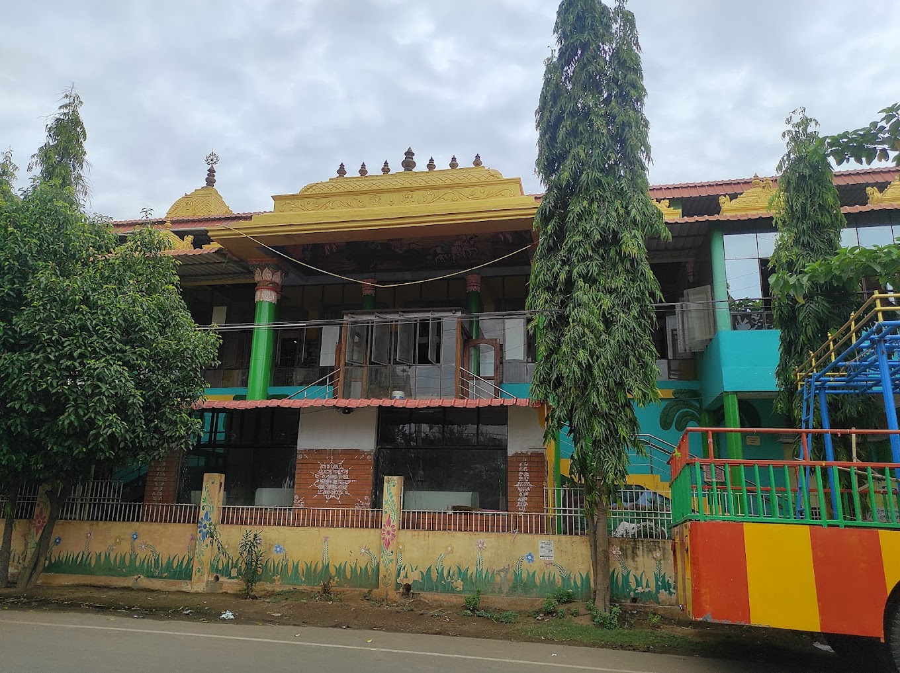

Iskon Temple

Temple Name: Iskon Temple
History: In January 2006, HH Sukadeva Swami Maharaj with some devotees started building the temple in Nellore, and started preaching activities like house programs, Nagara Sankirtan, Book Distribution. The Construction was completed in 2008, and became a famous Krishna Temple in Nellore
Maps